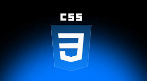
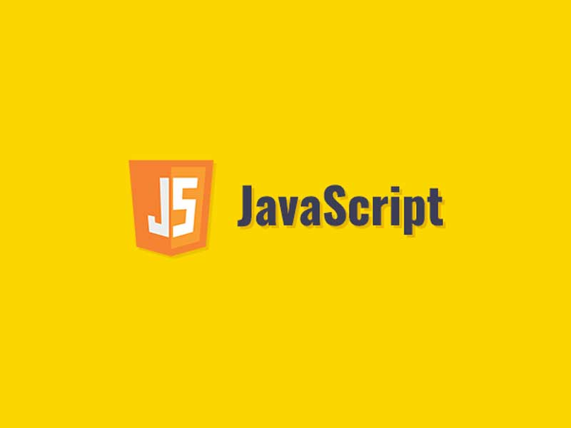
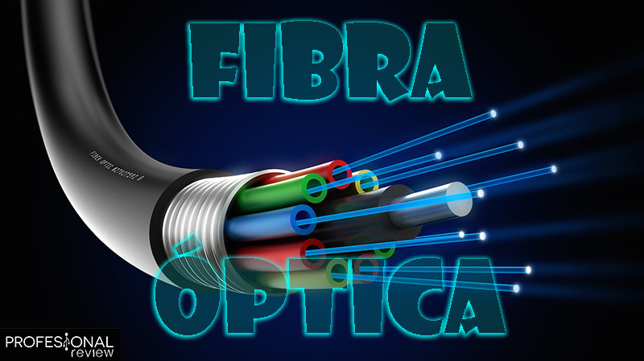

Estudiante de Ingenieria De Sistemas, apasionado por la tecnología experiencias digitales únicas.
HablemosHola, soy Josue S. Choque Parisaca, estudiante de Ingeniería de Sistemas en la Universidad Pública de El Alto. Desde que empecé esta carrera, me apasiona transformar ideas en soluciones digitales que realmente funcionen y marquen la diferencia.
Me especializo en crear aplicaciones web que no solo se vean bien, sino que sean intuitivas, rápidas y fáciles de usar. Para mí, el diseño y la experiencia de usuario no son detalles al final, sino la base de cualquier buen proyecto digital.
Lo que hace único mi perfil es que combino esta pasión por el desarrollo web con una formación sólida en la parte de la tecnología: redes, bases de datos, seguridad y toda la infraestructura que hace posible que todo funcione sin problemas. Esta visión integral me permite crear soluciones que no solo son visualmente atractivas, sino también robustas, eficientes y seguras desde sus cimientos.
Mi enfoque es simple: entender el problema real, pensar en la arquitectura adecuada y luego construir con código limpio y diseño cuidado. Creo que la mejor tecnología es la que soluciona sin complicar, y eso es lo que busco en cada proyecto.



𝕌𝕓𝕚𝕔𝕒𝕔𝕚ó𝕟: El Alto - La Paz, Bolivia
𝕋𝕖𝕝é𝕗𝕠𝕟𝕠: +591 75883027
ℂ𝕠𝕣𝕣𝕖𝕠: choquejosue50@gmail.com